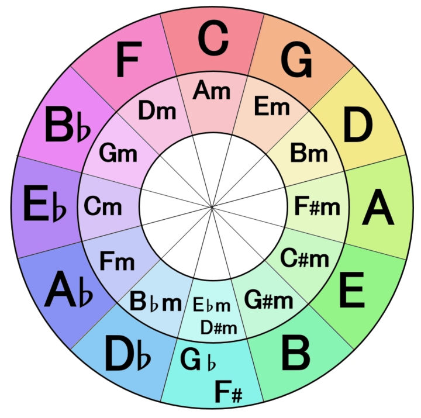
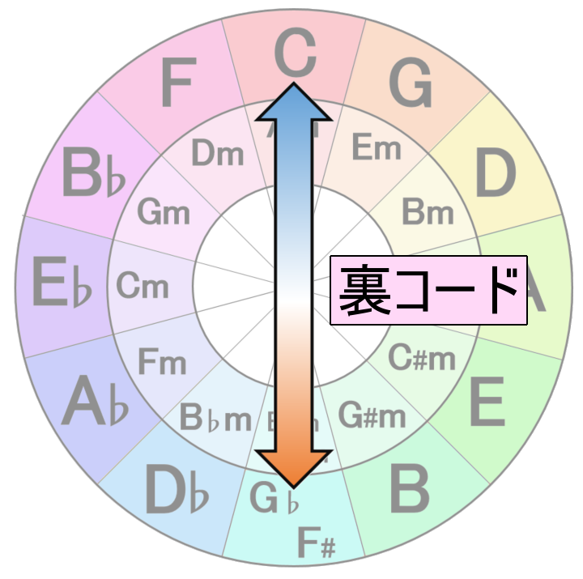
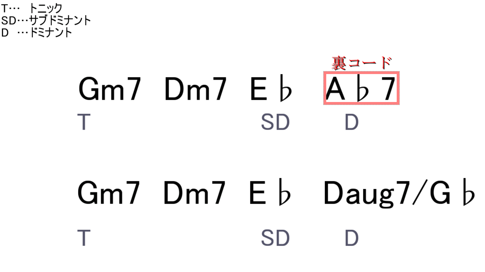

皆さんおはこんにちばんは。ソフトメディア研究会一回生のウッシーと申します。
普段はTwitterランドに生息してます。→@usiodaigakuわかりにくい題名で申し訳有りません。兼班している私ですが、今回の話はDTM班に関連する記事になるかなぁと思っております。
所謂コード進行とかいう奴に関するお話……大して理解してないのにどうしてこんな題材を選んだのか。
さて、皆さん「裏コード」って好きですか？
とまあこの裏コードなんですが独特の響きが有りまして、使うと何かいい感じになるのです。
そうです何かいい感じになるのです。←ここ重要
そんな「裏コード」を使ってみようZE！という記事です。多分。
と言っても「裏コードとはなんぞや？」って方がいらっしゃると思うのでので、まずざっくりと説明を試みてみます。
ポピュラー和声のコード（和音）についてざっくりと。
コード（和音）というのは音を積み重ねて出来るもの、というのはなんとなく解って頂けてるものとします。ドミソとかそういう奴です。
そんなコード達ですがは曲に置いて大体トニック、ドミナント、サブドミナントの三種類の機能を持っています。
各種類をざっくりと説明すると……
・トニック:安定してる。
・サブドミナント:ちょっとふわっとした感じ
・ドミナント:不安定でぶっ飛びたくなる感じ
以上の感じです。他にも色々有る（らしい）んですが、（よくわからないので）割愛。
抽象的過ぎて何言ってんだコイツって感じだと思うのでここで一つ例を上げてみます。
以下はAfternoon in Parisという曲とその一部のコード進行です。
どうしてこの曲かと言うととっさに弾けるのがコレしか無かったからです……
書いてある通りこの様にコードは三つの役割に振り分けられます。たまにどっちだよ、みたいなのもありますが大体分けられます。
ね？ほらふわっとしてぶっ飛んで着地するでしょ？？え、わからない？？
そんな貴方にこの表だ！
(https://ameblo.jp/jazzpianopractice/entry-12047988626.html)
これはCメジャースケール、ドレミファソラシド上で出来る各和音の機能が書いてあります。
こんな感じに割り当てられた機能を考慮し、和音を繋げていくとコード進行が出来上がったりするわけです。
取り敢えず大文字のアルファベットだけに注目してAfternoon in Parisで使われたコードを照らし合わせると、各機能が動画の通りになってるのが解って頂けるかと思います。
augとか良くわからん部分は代用和音とかいうモノでして。他にもスケールごとだったり他の調から借用したり色々有るので、興味がある方は「音楽 コード 機能」とかでググるのじゃ……（再びの丸投げ
以上のように分けた上で今回は「ドミナント」に着眼します。「裏コード」と関連が深いのはこのドミナントって奴なのです。
さあ、やっと裏コードの話に入りますよっ！さて、まず裏コードの定義的な奴を見てみましょう。
・トニックコードの「半音上の７ｔｈコード」
はい、これだけです。
と言われても意味わからないと思います。ええ、ぼかぁ全然わからなかった。こういう事だけ書く人はﾀﾋんでしまえ。
なので、まずは例を……
Cメジャースケール上で考えると、C（ド）がトニックなので半音上の7thコードが裏コード呼ばれるものになります。ざっくり言うとD♭7（C#7）（ドとレの間）を一番下にした和音が裏コードです。
(http://www.piano-c.com/pianoChord_C_sha7.html)
この関係をなんかサークルオブフィフスとか五度圏とかいう、よくわからん円で表せたりします。
↓サークルオブフィフス
(https://dn-voice.info/music-theory/subchord/)
置き換えたいコードの裏側がその裏コードになります。
(https://dn-voice.info/music-theory/godoken/)
因みに記事タイトルの裏の裏の裏の裏で結局元のコードに戻ったり。
これで大分ざっくりと裏コードが何を表すのか解ったと思うのですが、じゃあこれは一体どうやって使うんだよって話ですね。
これが先程のドミナントと関連してきます。実はこいつは「ドミナント」のコードと入れ替えたり繋げたり出来るのです。
色々語るよりも例が有った方が良いと思うので、先程のAfternoon in Parisという曲でやってみます。
こんな感じに入れ替えたり……
こんな感じに繋げたり……
こんな感じに繋げたり……
という訳でこんな感じに展開に味を付けたり増やしたり出来るわけなのです。
なんかしつこい？ちょっと突飛過ぎない？と思う方もいらっしゃるかも知れませんが、まあそういう効果を狙って使われる（ハズの）ものなので……
合わないと思ったら素直に普通のドミナントを使いましょう！（おい
さてさて、素人の私がこれ以上語るよりも実例を聴いて体感する方が良いと思います。
私の好みに偏った裏コードが使われてる曲を貼っていきます。
まずツミキさんの曲「トウキョウダイバアフェイクショウ」
この曲は冒頭から裏コードが使われています。コード進行は以下の感じ……
4つ目が裏コードってやつです。ここは本来トニックのG♭mに戻るためにドミナントのF7かDmとかD7とかを踏むのがベーシック（なはず）です。
でもそこで裏コードに入れ替える事で何か良い感じになってます。そうです何かいい感じになるのです。
ツミキさんはこっち曲でも似たような進行を使ってたりします。
はい、次は手前味噌ながら自分の曲「Emotionist」から。こちらの曲では裏コードをサビの後半に使っています。
こんな感じで使ってます。
前半の2つ目のコードはB♭aug7というドミナントを使っていますが、それを後半ではB♭aug/Eに置き換えてます。
なんか分数コードになってますがその辺は気にしないでください。なぜなら僕もわからないからです（おい
取り敢えずこれも裏コードの一種ということで、入れ替える事で何かいい感じになってます。そうです何かいい感じになるのです。
次は皆さん恐らくご存知polyshaさん「アンダーザムーン・アドレセンス」から。
この曲ちょこちょこ裏コードっぽいアレが有るのですが、サビをピックアップ。サビは1:03辺りからです。
トニックをドミナントに見立てて…みたいな感じの奴が沢山有ります。めっちゃ色々なところがいい感じになってますね。そうです何かいい感じに（以下略
この曲「Monochrome Princess」も1:17ら辺が裏コードぽいです（自信ない
そろそろ食傷気味かも知れませんが、次は坂本真綾さんの「Be mine!」から。
冒頭からです。おかしいです。皆the band apart聴こうな。（この曲の作編曲やってるバンド）
この曲は「世界征服～謀略のズヴィズダー～」っていう少し頭のおかしい系（そんなことない）のアニメのOPなんですが、曲の方も中々に頭がおかしい。原さんのベースラインどうなってんのマジで。
ライブで坂本真綾さんはこれをCD音源以上の歌唱で歌います。一度でいいから生で聴いてみたい……
さあ、次で最後です。他にも多少有ったんですがもうコレで良いかなって。
所謂（？）イキスギコードって奴です。1:07辺りですね。
アニソン系で裏コードって言ったらこの曲みたいなアレ。どこぞの大便系弾き語りYoutuberのおかげ（せい）で有名になった例の曲ですね。
いやいや、話題性はともかくこの曲全体的に結構凄いんですよ。編曲面だと裏で鳴ってるピンポン玉っぽい音とか。めっちゃ動くベースとか
裏コードの使い方としてはサビの頭で使っているのでBe mine!と似た感じですね。
この曲はご存知田中秀和さんの作編曲なんですが、この他にも秀和さんは裏コードを割と多用します。
これとか……
これとか……
セカンダリドミナント（詳しくはググってください……）の間にちょくちょく入れたりしてて、とっても弾きにくいです。（そこ
ちなみに田中秀和さんはthe band apartのファンらしいので、もしかしなくとも影響が有るのかも…？
さて、ざあっと裏コードに付いて話してきましたが如何だったでしょうか？
大分雑ですいません！！ていうか内容がちゃんと合ってるか不安で仕方がないです！！間違ってたらてへぺろ(・ω<)（ご教授お願いします
最後の方ボカロアニソン祭りでしたが許して欲しいです。ぼかぁオタクなのでね！！そういう曲に寄るのは仕方が無いね！！！
そんな訳で皆さん！取り敢えず自分の曲のドミナントを裏コードにしてみて、何かいい感じにしましょう！！
最後までお付き合い頂きありがとうございました！！
※私自身音楽理論が素人極まっているので、何かツッコミ有れば是非ご教授お願いします……